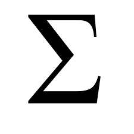
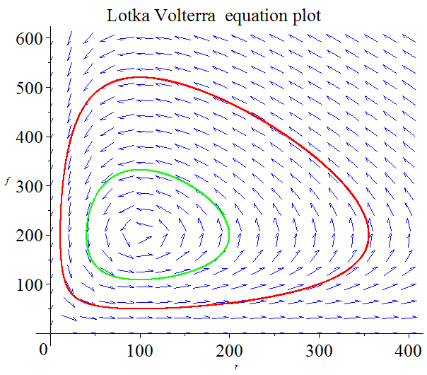

QBIO Home
Welcome to BIOL3360!
1
BIOL3360: Analysis and Communication of Biological Data
1.1
Course description
1.2
Course Delivery
1.3
Textbooks and Resources
1.4
Assessment
1.5
Goals and expectations
1.6
Course communication
1.7
And finally…
2
Week 1: R Programming I
2.1
Why Programming? Why Statistics? Why R?
2.2
Why Statistics?
2.3
Why R?
3
Beginning R Programming
3.1
The Workspace Setup
3.2
First steps
3.3
The Art of R Programming
4
More R Programming
4.1
More on Data Structures
4.2
Lists
4.3
Data Frames
5
Flow of Control
5.1
Loops
5.2
For loops
5.3
while and repeat
5.4
Branching code: The if-then-else construct.
5.5
Conclusion
6
Effect sizes and uncertainty
6.1
Effect sizes
6.2
Uncertainty
6.2.1
Standard errors and confidence intervals
6.2.2
A practical example
Published with bookdown
BIOL3360
BIOL3360
Simone Blomberg
Welcome to BIOL3360!
